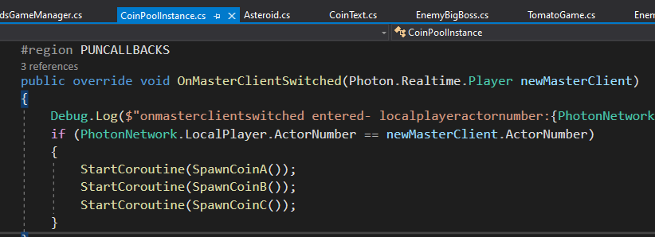
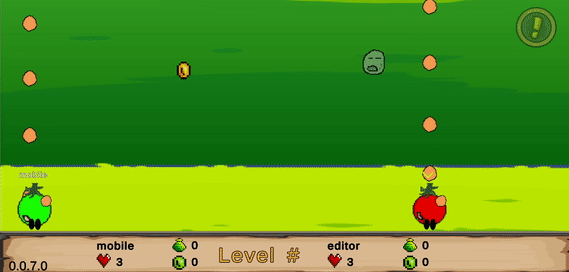
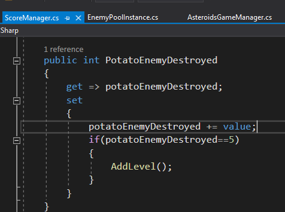
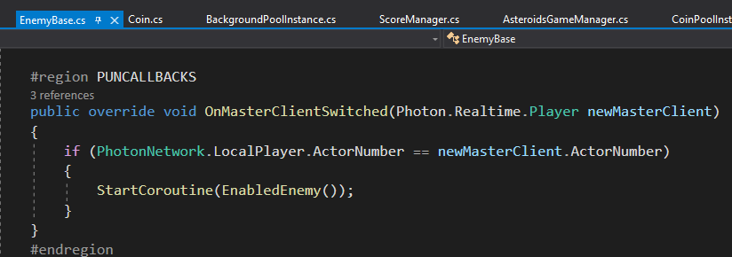
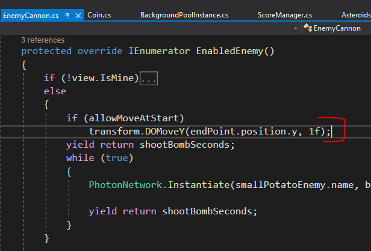
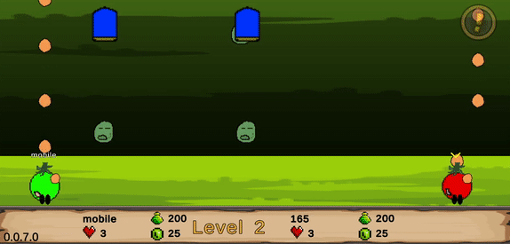
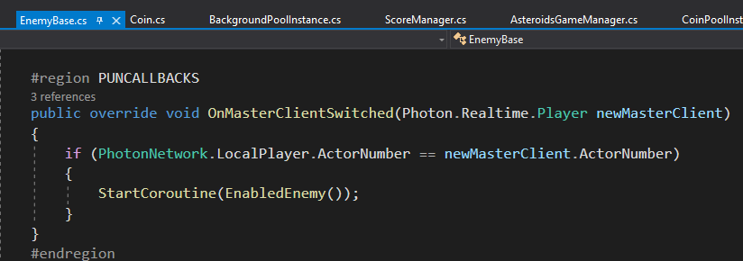
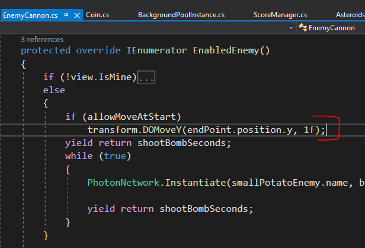
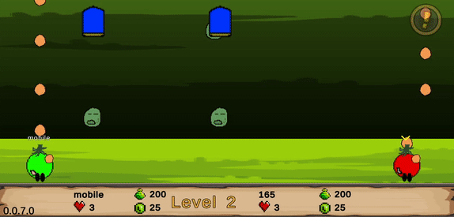

First Android Game - Part 15 - Changing Masters
Aug 19, 2023
This is part 15 of making my first Android Game. If you missed part14, you can find it here
I originally thought I had to change the PhotonView component's Onwership Transfer field from "fixed" to "Request". However, a request may be more useful when the master wants to pass on an object that they are holding to the client. When I looked at the DemoAsteroid from PUN2 example, the asteroids PhotonView component were all fixed. They will spawn asteroids in Start() if it is the master client. Then they will have a callback OnMasterClientSwitched to check if the master dropped out and spawn asteroids their instead. So I applied the same logic for spawning coins

From the result below you can see that the mobile is the master, the editor is the client. The editor is what is being recorded. When the mobile drops out by closing the app - the player and any objects that was spawned gets destroyed. However, the client is now the new master and continues spawning the coins. Note I haven't handled if the user selects "Quit". Currently that makes both client and master go to login screen, this could be due to the start game logic in the room scene where I force both player to change scenes

Recall that only on the master is the coin getting destroyed using PhotonNetwork.Destroy(). The client will disable the coin. So I double checked that when the master drops out, the new master destroys the coin. Now I apply the same logic for spawning the coin to the small potato enemies. It appears to work, however, for level 1 to go to level 2, I need to destroy 5 enemies. If the master drops out, no matter how many enemeis was destroyed before master dropped out, the count appears to reset to 0. My guess is because the PotatoEnemyDestroyed property is local to each client, so when the master drops out, the new master's PotatoEnemyDestroyed property is 0

Another problem is when the master drops out on level 2 - which is where the cannon is shooting the potatos. The new master will not have the cannons shooting the potatos. The canon will shoot potatos if the master drops out in level 1 when the cannon has not appeared yet.
 Let's first tackle the canon not shooting potatoes problem. In OnEnable(), the EnabledEnemy() coroutine gets called only if view.isMine. This coroutine when move the canon and make the canon shoot potatoes. When the master drops out, the EnabledEnemy() coroutine was never called on the client. So applying the same logic I did with the Coins and Potato enemies, I will call the coroutine using the callback OnMasterClientSwitched in EnemyBase.cs

This made the canon enemy continue shooting, but it also moved the canon enemy again because EnemyCanon.cs calls DoMove

This created an undesired result where the enemy moves again after the master drops out

Recent blogs
See all blogs
Let's first tackle the canon not shooting potatoes problem. In OnEnable(), the EnabledEnemy() coroutine gets called only if view.isMine. This coroutine when move the canon and make the canon shoot potatoes. When the master drops out, the EnabledEnemy() coroutine was never called on the client. So applying the same logic I did with the Coins and Potato enemies, I will call the coroutine using the callback OnMasterClientSwitched in EnemyBase.cs

This made the canon enemy continue shooting, but it also moved the canon enemy again because EnemyCanon.cs calls DoMove

This created an undesired result where the enemy moves again after the master drops out

Recent blogs
See all blogs